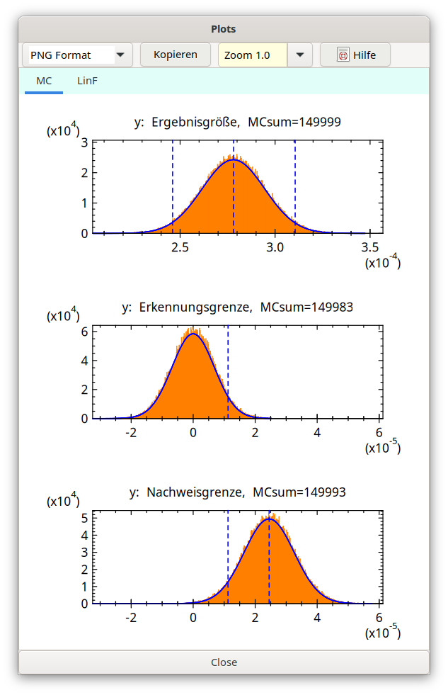

5.18. Ermittlung der MC-Verteilungen und daraus abgeleiteter Kenngrößen im Detail¶
Bei der Monte Carlo Simulation werden nacheinander drei verschiedene Verteilungen erzeugt, aus denen jeweils bestimmte Kennwerte abgeleitet werden. Bei den abgeleiteten Kennwerten handelt es sich neben arithmetischem Mittelwert und Standardabweichung der Verteilung vor allem um bestimmte Quantile.
Am Beginn wird die (große) Anzahl N von simulierten Messwerten der Ergebnisgröße festgelegt. Dies definiert einen „Run”. Es können mehrere „Runs” (Anzahl r; maximal 50) gerechnet werden, so dass mit den jeweils erhaltenen Kenngrößen statistische Auswertungen gemacht werden können; man erhält aus der r-fachen Wiederholung der Simulation z.B. mit der Standardabweichung eine statistische Angabe über die Unsicherheit der erhaltenen Kennwerte.
Ermittlung eines Quantils
Das bisher in UR2 benutzte MC-Verfahren war primär für das Vorliegen nahezu symmetrischer Verteilungen der Ergebnisgröße ausgelegt. Mit der Anwendung des GUM Supplements 1 können nicht-symmetrische Verteilungen bestimmter Eingangsgrößen zu einer asymmetrischen Verteilung der Ergebnisgröße führen. Hierfür erwies sich das bisher benutzte Verfahren, für das vor der Simulation die zu erwartenden Extremwerte im Programm festzulegen waren, als nachteilig.
Therefore, with version 2.1.9 the MC procedure was modified – and thereby simplified, in that all MC values of the output quantity are now store in an array. Now, for every of the three above mentioned distributions MC simulation yields arrays of up to 2 000 000 MC values. From these arrays mean and standard deviation are easily calculated. Quantiles are estimated by a distribution-free method, which requires sorting the arrays first. Only for the purpose of graphical representation as a histogram, the MC values have to be sorted into 20 000 Bins („multi-channel“); the limits of the histograms are determined after the MC simulation – and not before. These modifications made the MC procedure code easier to handle.
Schätzwerte nach Bayes
For the estimation of mean, standard deviation and lower and upper confidence limits according to the Bayesian method only the distribution truncated at zero is used, values below zero are not used and not considered for the total number of values. The confidence limits are estimated as lower and upper quantile of the distribution. The total number of values considered in one run is only about N/2.
With Version 1.03 an option was added within the dialog „Results“, MC section, with which it is possible to calculate a special pair of coverage limits which has the shortest distance (Bayesian coverage interval of shortest length) instead of the symmetrical confidence limits. Test case: Neutron-Dose-Cox-2006_EN.txp. The activation of this option does not lead to a significant increase of simulation duration.
Input parameters being associated with an asymmetric or rectangular distribution may result in a significant asymmetry of the output quantity distribution. In the decision threshold case this may cause some deviation of the mean value from zero.
At first, a deviation from an expected distribution symmetrically to zero is tested. This is done by comparing the mean value y1, deviating from zero, with the MC uncertainty of the mean, u(y1)/√N (see below). In the case of
\(\frac{y_{1}}{u\left( y_{1} \right)/\sqrt{N}} > 0.10\ \)
an iteration is performed for the decision threshold using the secant method, which shifts the mean value closer to zero. If necessary, up to 12 steps are performed, each of them requiring a full MC simulation; this leads to increasing computational effort. If the above ratio does not fall below 0.10, that distribution with the lowest ratio is selected from those of the 12 steps, from which the decision threshold is then calculated. y1 can be reduced by typically one to two orders of magnitude; it may happen, however, that y1 is reduced by hardly more that a factor of 10.
Erkennungsgrenze
Für die Erkennungsgrenze erfolgt eine Modifikation dergestalt, dass der „wahre Wert” der Nettozählrate (und damit auch der Aktivität) gleich null gesetzt wird. Es resultiert eine Verteilung der damit simulierten Einzelwerte, die zu etwa 50% im negativen Bereich liegt. Es erfolgt keine Abschneidung bei null. Das hieran ermittelte obere (1-\(\alpha\))-Quantil stellt den erhaltenen Wert der Erkennungsgrenze dar.
Nachweisgrenze
Die Ermittlung der Nachweisgrenze ist der zeitaufwändigste Teil der Simulation, da hierbei die Verteilung in einem iterativen Vorgang mehrere Male, jeweils nach Erreichen der Gesamtanzahl von Einzelwerten, durch Änderung des Mittelwerts der Verteilung verschoben wird. Ziel der schrittweisen Verschiebung ist, dass das (untere) ß-Quantil dieser Verteilung dem zuvor bestimmten Wert der Erkennungsgrenze immer näherkommt. Das Iterationsverfahren basiert auf dem Bisektionsverfahren, wobei jedoch nicht eine simple Halbierung eines Intervalls erfolgt, sondern die Teilung durch lineare Interpolation zwischen seinen beiden Grenzen erfolgt.
Negative values are explicitly considered in these calculations.
Die Motivation, bei Erkennungsgrenze und Nachweisgrenze deren negative Anteile ihrer Verteilungen nicht zu verwerfen, besteht darin, dass der primär erhaltene Messwert der Ergebnisgröße direkt mit der Erkennungsgrenze verglichen werden soll. Würde man die negativen Anteile verwerfen, müsste der primäre Messwert, der ja negativ sein kann, erst eine zum Abschneiden analoge Transformation erfahren, bevor der Vergleich wieder möglich wäre.
To make the distributions non-negative in the case of the Bayesian estimates is possible after a comparison between primary output quantity and the Decision limit has been done and has led to the conclusion that the assumption of a non-zero activity value in the sample is true.
Schätzung der MC-Unsicherheiten der Kennwerte
Eine MC-Simulation mit nur einem einzelnen Run ergab bislang keine Abschätzungen der Unsicherheiten der Kennwerte. Darüber hinaus sind auch die bei kleiner Run-Anzahl aus der Spreizung zwischen den Runs erhaltenen Abschätzungen nicht sehr zuverlässig.
Da die erhaltenen MC-Verteilungen in der Regel normal-verteilt sind, können jedoch Unsicherheiten der Kennwerte wie folgt geschätzt werden (siehe z.B. Barlow, 1999):
Kenngröße: |
Breitenparameter: |
Formel für die (absolute) Unsicherheit: |
|---|---|---|
Wert der Ergebnisgröße |
\(\sigma\) |
\(\frac{\sigma}{\sqrt{N}}\) |
Uncertainty |
\(\sigma\) |
\(\frac{\sigma}{\sqrt{2N}}\) |
die untere Vertrauensgrenze |
\(\sigma\) |
\(\frac{\sigma}{\varphi\left( \Phi^{-1}(1 - \gamma/2) \right)}\sqrt{\frac{(1 - \gamma/2) \cdot \gamma/2}{N}}\) |
die obere Vertrauensgrenze |
\(\sigma\) |
dito |
Erkennungsgrenze |
\(\sigma^* = \frac{y^*}{k_{1 - \alpha}}\) |
\(u_{MC}\left( y^{*} \right) = \frac{\sigma^*}{\varphi\left( \Phi^{-1}(1 - \alpha) \right)}\sqrt{\frac{(1 - \alpha) \cdot \alpha}{N}}\) |
Nachweisgrenze |
\(\sigma^{\#} = \frac{y^{\#} - y^*}{k_{1 - \beta}}\) |
\(u_{MC}\left( y^{\#} \right) = \sqrt{u_{MC}^{2}\left( y^{*} \right) + u^{\#\ 2}}\), with \(u^{\#} = \frac{\sigma^{\#}}{\varphi\left( \Phi^{-1}(1 - \beta) \right)}\sqrt{\frac{(1 - \beta) \cdot \beta}{N}}\) |
(N: Anzahl der MC-simulierten Einzelmessungen; ϕ(.) und Φ(.): Dichte- bzw. Verteilungsfunktion der Standardnormalverteilung; zu den Wahrscheinlichkeiten α, β und γ siehe Dialog Optionen).
Die nach dieser Tabelle berechneten MC-Unsicherheiten werden im MC-Teil des TABs „Results” als relative Werte in Prozent ausgegeben, jedoch nur bei einem einzelnen Run.
Grafische Darstellungen
Die bei den drei vorstehenden Punkten erzeugten Verteilungen werden während des Ablaufs der Simulation in einem separaten Fenster auch grafisch als Histogramm dargestellt. Die Verteilungen zeigen während der r Runs die aus den bereits erfolgten Runs akkumulierte Verteilung, die sich schon nach wenigen Runs „stabilisiert”. Bei den Runs zur Nachweisgrenze wird erst nach Beendigung aller Runs die akkumulierte Verteilung dargestellt. Die X-Achse (Abszisse) entspricht den Werten der ausgewerteten Größe, die im Titel des jeweiligen Graphs bezeichnet ist, die Y-Achse (Ordinate) stellt den Wertebereich der Wahrscheinlichkeit dar.
Beispiel des separaten Fensters mit den MC-Graphiken:

Vertikale grüne Linien in den Grafiken markieren, jeweils von links nach rechts in den Verteilungen, folgende Werte:
Verteilung Werte
Ergebnisgröße untere Vertrauensgrenze, bester Schätzwert (Bayes), obere Vertrauensgrenze
Erkennungsgrenze ihr Wert
Nachweisgrenze Erkennungsgrenze, Nachweisgrenze
Nach jedem einzelnen MC-Run wird diejenige Gauß-Kurve, die dem Ergebnis des analytischen Verfahrens entspricht, in blauer Farbe geplottet.
Note: The separate window with the MC graphs is maintained after completion of the MC simulation calculations. This allows for additional inspection of data shown under the different TABs and for invoking a result report and to go then back to “Results” TAB with this window. If data or options were changed during this step having the consequence that the original assumptions underlying the MC simulation are no longer valid, this MC window will be closed. This is also done when again calculations in the TAB “Values, Uncertainties” or calculations initiated by the change from TAB “Values, Uncertainties” to the TAB TAB „Unsicherheiten-Budget“ are invoked.